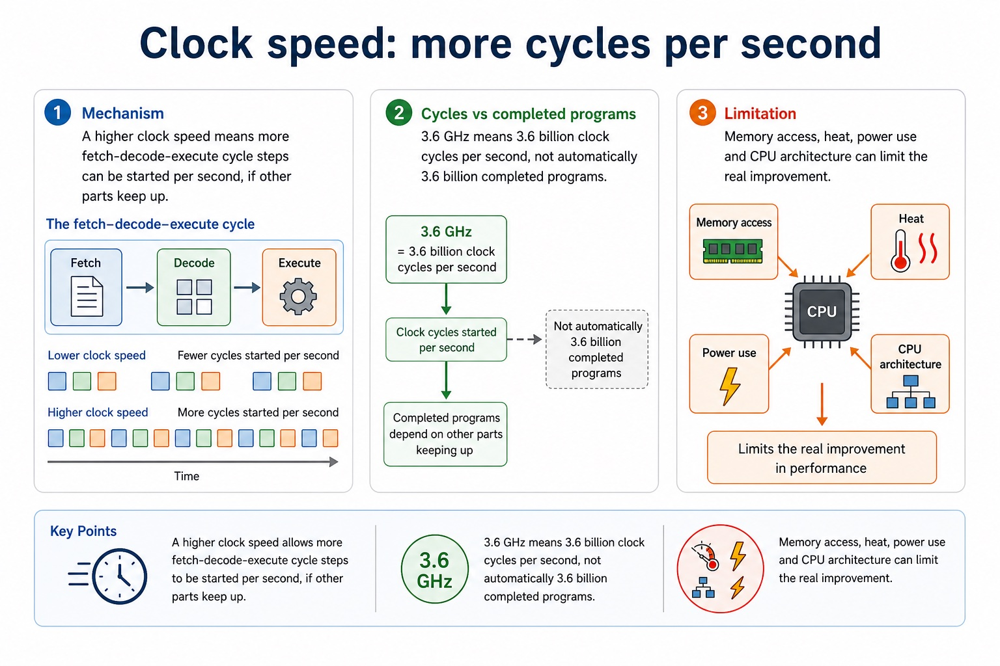
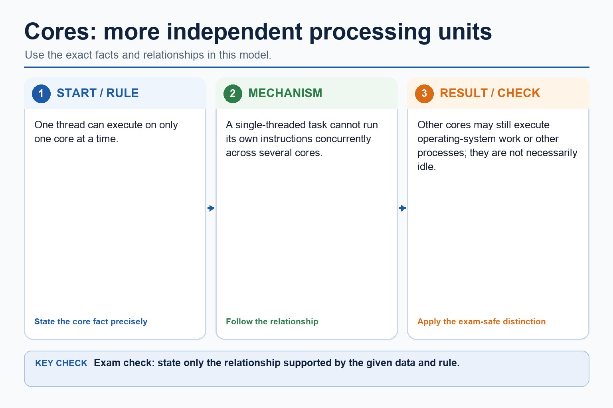
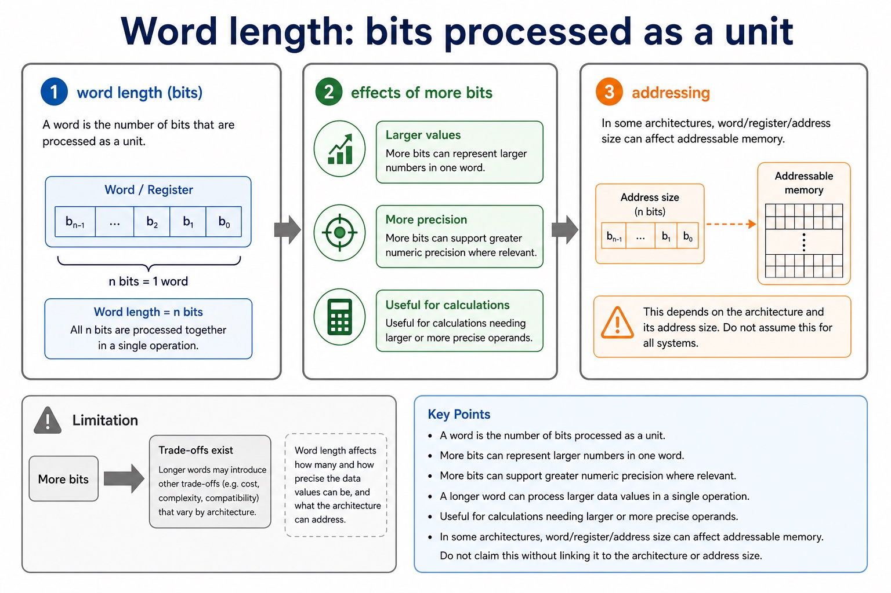

Processor performance depends on processor type, number of cores, bus width, clock speed and cache memory. Processor type means the processor architecture and instruction-set design, including how much useful work its execution units can perform for a particular instruction or workload; a clock-rate comparison alone is therefore not sufficient.
More cores can execute independent threads concurrently when software exposes parallel work. Wider data buses can transfer more bits per transfer, while address-bus width affects the address space. Higher clock speed provides more clock cycles per second, and cache reduces waiting when frequently used instructions or data are found close to the CPU.
No factor guarantees that every program runs faster. Performance must be justified for the stated workload, because software parallelism, instruction-set compatibility, cache behaviour, memory traffic, heat and other bottlenecks can limit the benefit.
Worked example: Compare two processors for two workloads
Processor A has four faster general-purpose cores and a larger cache; Processor B has eight specialised cores but a lower clock speed. A lightly threaded office program may favour A's processor type, clock behaviour and cache, while a parallel workload written for B's processor type may use more cores. Bus width and memory traffic must also be considered before reaching a conclusion.
Bus width and addressable locations
Bus width and addressable locations: source-grounded visual explanation.
Lesson fact: Address bus width
Lesson fact: If the address bus has n lines, it can represent 2^n different addresses.
Lesson fact: A 16-bit address bus can address 2^16 = 65,536 memory locations.
Lesson fact: Data bus width
Lesson fact: A wider data bus can transfer more bits at once, which can affect throughput.
Lesson fact: Precision
Lesson fact: Address bus width affects address range; data bus width affects transfer size.
Core syllabus practice
Complete processor performance factors: apply and assess
Targeted practice
1. What does processor type mean as a performance factor?
Show answer
The processor architecture/instruction-set and execution design, which determines what work it can perform per instruction or for a particular workload.
2. Why do more cores not always improve one program?
Show answer
The program must contain independent threads or tasks that can run in parallel.
3. How can bus width affect performance?
Show answer
A wider data bus can transfer more bits per transfer; address-bus width affects the address space rather than directly guaranteeing speed.
4. Why can cache improve performance?
Show answer
A cache hit supplies frequently used data or instructions faster than main memory, reducing CPU waiting.
Exam-style question
6 marks
Two computers have different processor types. Explain how processor type, number of cores, bus width, clock speed and cache can affect their performance for a stated workload.
Show MS
Answer
Guidance
Marks
processor type linked to architecture/instruction-set/execution design and workload
Do not accept processor type as only a brand name, or claim that the highest clock speed or largest core count always wins.
1
cores linked to available parallel threads/tasks
1
bus width linked accurately to bits transferred or address space
1
clock speed linked to cycles per second
1
cache linked to reducing slower main-memory access
1
conclusion recognises workload and bottlenecks rather than claiming one factor guarantees speed
Processor performance depends on several interacting factors.
The official factors are processor type and number of cores, bus width,
clock speed and cache memory. Each can contribute to performance, but
only when the architecture, memory system, workload and software can benefit.
Explainhow processor type, cores, bus width, clock speed and cache affect performance
Processor type: architecture and execution designCores: parallel executionBus width: bits transferred per transferClock speed: cycles per secondCache: faster repeated access
Performance is a team sport. One superstar part can still meet a bottleneck.
Why this matters
Exam answers must explain mechanism and limitation. Vague phrases like "better performance" are usually not enough.
Common error
Do not rank CPUs using one number only. A higher clock speed does not guarantee a faster system in every task.
Warm-up hook
A laptop has twice as many cores. Will every program run twice as fast?
Click the best answer. The CPU marketing department may be optimistic; the exam mark scheme is not.
Choose one. Performance answers need a cause, a consequence and a sensible condition.
Knowledge point 1
Processor type and number of cores, bus width, clock speed and cache memory
Processor typeArchitecture and execution design affect how much useful work is completed for a workload.Number of coresProcessing units that can execute instructions independently, allowing parallel work.Bus widthA wider data bus can transfer more bits in one transfer when the rest of the system can use them.Clock speedHow many clock cycles the CPU can perform per second, commonly measured in Hz/GHz.Cache memorySmall, fast memory storing frequently or recently used data and instructions close to the CPU.
Chinese support: processor type = 处理器类型；core = 核心；bus width = 总线宽度；clock speed = 时钟频率；cache = 高速缓存。
The official processor performance factors
The official processor performance factors: source-grounded visual explanation.
Lesson fact: The official performance factors are processor type and number of cores, bus width, clock speed and cache memory.
Lesson fact: Processor type affects how much useful work can be completed for a workload, while more cores help only when work can run in parallel.
Lesson fact: A wider bus transfers more bits per transfer; a higher clock speed provides more cycles per second; cache reduces slower main-memory accesses when required data or instructions are present.
Lesson fact: No single factor guarantees that one computer will be faster for every program.
Knowledge point 2
Clock speed: more cycles per second
MechanismA higher clock speed means more fetch-decode-execute cycle steps can be started per second, if other parts keep up.Example3.6 GHz means 3.6 billion clock cycles per second, not automatically 3.6 billion completed programs.LimitationMemory access, heat, power use and CPU architecture can limit the real improvement.
Clock speed: more cycles per second

Clock speed: more cycles per second: source-grounded visual explanation.
Lesson fact: Mechanism
Lesson fact: A higher clock speed means more fetch-decode-execute cycle steps can be started per second, if other parts keep up.
Lesson fact: 3.6 GHz means 3.6 billion clock cycles per second, not automatically 3.6 billion completed programs.
Lesson fact: Limitation
Lesson fact: Memory access, heat, power use and CPU architecture can limit the real improvement.
Knowledge point 3
Cores: more independent processing units
Where extra cores help
Several programs running at the same time.
Tasks that can be split into parallel threads.
Background tasks while a foreground task remains responsive.
Where extra cores may not help much
A single-threaded program that cannot be divided.
A task waiting for disk, network or memory.
Software that was not designed for parallel processing.
Cores: more independent processing units

Cores: more independent processing units: source-grounded visual explanation.
Lesson fact: One thread can execute on only one core at a time.
Lesson fact: A single-threaded task cannot run its own instructions concurrently across several cores.
Lesson fact: Other cores may still execute operating-system work or other processes; they are not necessarily idle.
Knowledge point 4
Cache: reduce slow memory access
1. CPU requests dataThe CPU needs an instruction or data item.
2. Cache checked firstCache is much faster than main memory.
3. Cache hitIf found, access is fast and the CPU waits less.
4. Cache missIf not found, data is fetched from slower main memory and may be copied into cache.
Common error
Cache is not the same as RAM capacity. It is smaller, faster and used to reduce repeated slow access to main memory.
Lesson fact: 1. CPU requests data The CPU needs an instruction or data item.
Lesson fact: 2. Cache checked first Cache is much faster than main memory.
Lesson fact: 3. Cache hit If found, access is fast and the CPU waits less.
Lesson fact: 4. Cache miss If not found, data is fetched from slower main memory and may be copied into cache.
Lesson fact: Common error
Lesson fact: Cache is not the same as RAM capacity. It is smaller, faster and used to reduce repeated slow access to main memory.
Optional enrichment — not part of this syllabus performance-factor list
Word length: bits processed as a unit
Effect
Explanation
Exam-safe wording
Larger values
More bits can represent larger numbers in one word.
A longer word can process larger data values in a single operation.
More precision
More bits can support greater numeric precision where relevant.
Useful for calculations needing larger or more precise operands.
Addressing
In some architectures, word/register/address size can affect addressable memory.
Do not claim this without linking it to the architecture or address size.
Limitation
Longer word length alone does not make all programs faster.
The software and data type must benefit from the larger word.
Word length: bits processed as a unit

Word length: bits processed as a unit: source-grounded visual explanation.
Lesson fact: Explanation
Lesson fact: Exam-safe wording
Lesson fact: Larger values
Lesson fact: More bits can represent larger numbers in one word.
Lesson fact: A longer word can process larger data values in a single operation.
Lesson fact: More precision
Lesson fact: More bits can support greater numeric precision where relevant.
Lesson fact: Useful for calculations needing larger or more precise operands.
Lesson fact: Addressing
Lesson fact: In some architectures, word/register/address size can affect addressable memory.
Lesson fact: Do not claim this without linking it to the architecture or address size.
Lesson fact: Limitation
Knowledge point 6
Performance is limited by bottlenecks
Memory bottleneckA fast CPU still waits if data arrives slowly from memory.Software bottleneckSingle-threaded code cannot fully use many cores.Heat and powerHigher clock speed can require more power and produce more heat.ArchitectureDifferent CPU designs may do different amounts of work per clock cycle.
Performance is limited by bottlenecks
Performance is limited by bottlenecks: source-grounded visual explanation.
Lesson fact: Memory bottleneck A fast CPU still waits if data arrives slowly from memory.
Lesson fact: Software bottleneck Single-threaded code cannot fully use many cores.
Lesson fact: Heat and power Higher clock speed can require more power and produce more heat.
Lesson fact: Architecture Different CPU designs may do different amounts of work per clock cycle.
Interactive tool
Performance factor selector
Select a scenario and see which factor is most relevant. This is not a benchmark; it is an exam-answer thinking tool.
Worked examples
Explain the factor and the condition
5-minute quiz
Practice with instant checking
Short answers are accepted, but "faster" without the reason is still wearing a disguise.
Mistake debugging
Fix the performance claim
Exam-style questions
Cambridge-style questions with expandable mark schemes
These are original Cambridge-style questions. MS notes are strict about mechanism, scenario and limitations.
Summary
Explain performance with conditions
Clock speedMore cycles per second can allow more instructions to be processed.
CoresMore cores help when work can be run in parallel.
CacheFast memory reduces repeated access to slower main memory.
Word lengthMore bits can be processed as a unit for suitable data.
BottleneckThe slowest limiting part may reduce the real benefit.
Exam habitState factor, mechanism, condition and consequence.
Homework
Turn vague performance claims into mark-worthy explanations
Define processor type, number of cores, bus width, clock speed and cache memory in one sentence each.
Write a 4-mark answer explaining why more cores may not speed up a single-threaded program.
Explain how cache can improve performance when a program repeatedly accesses the same data.
Correct this sentence: "A 4 GHz CPU is always faster than a 3 GHz CPU."
Choose one real task, such as gaming, video export or web browsing, and identify the most likely performance bottleneck.